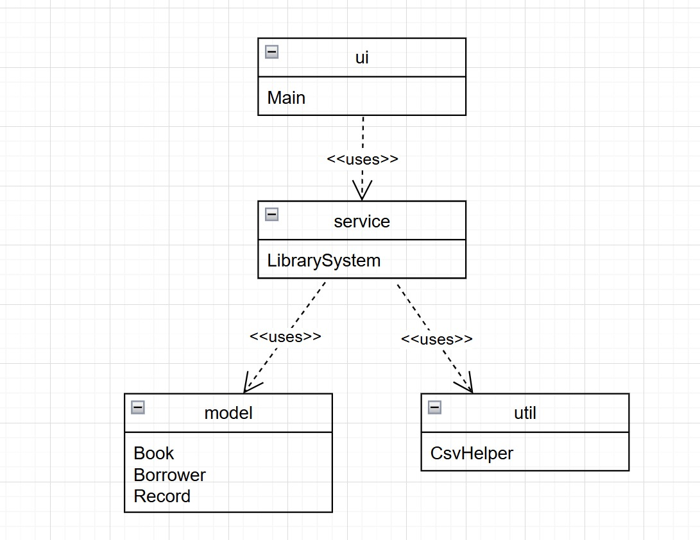
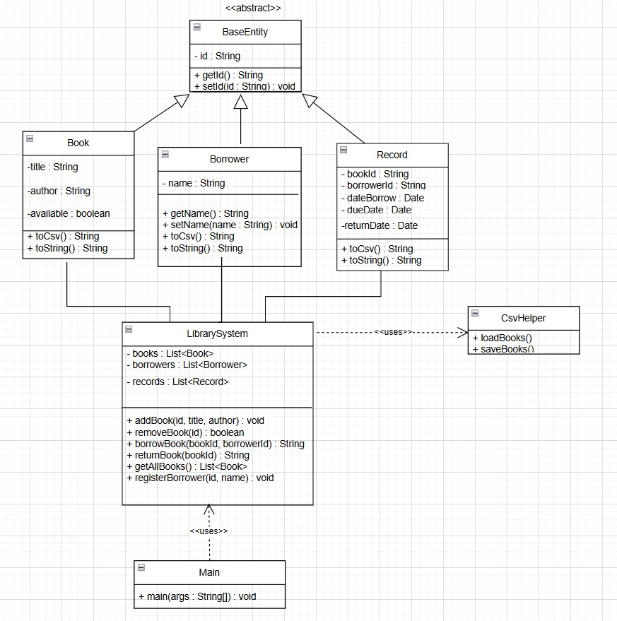
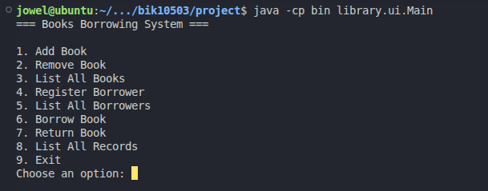
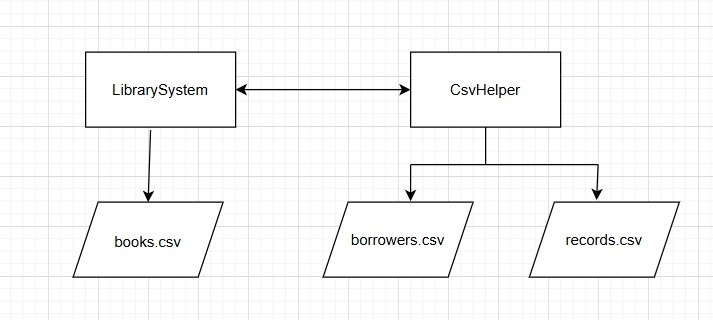
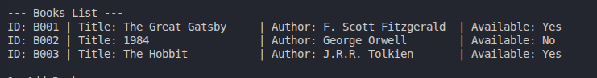

01
MD Jowel
AI250004
Group Memberfor Tunku Tun Aminah Library
public class BooksBorrowingSystem {
course = "BIK10503";
language = "Java";
design = "OOP + UML";
storage = "CSV Persistence";
modules = ["ui", "service", "model", "util"];
}The developers behind the Books Borrowing System.
AI250004
Group MemberAI250042
Group MemberAI250032
Group Member
AI250036
Group Member
AI250034
Group MemberAI250022
Group Member
AI250002
Group MemberA command-line Java application that helps automate library operations for Tunku Tun Aminah Library.
Designed for efficient library management.
Manage books, borrowers, and records seamlessly.
Built with Object-Oriented principles and CSV persistence.

Manual library records create slow, inaccurate, and hard-to-track operations.
Staff cannot quickly know whether a book is available or borrowed.
Manual logs make it difficult to verify who borrowed which book.
Handwritten records are easier to lose, damage, or enter incorrectly.
Borrowing history and overdue tracking become difficult to analyze.
Entities (Model)
Book → details & availability
Borrower → borrower details
Record → links book to borrower dates
Service → LibrarySystem logic
Utility → CsvHelper read/write
UI → Main menu interaction

Menu Functions
• Add/Remove/List Books
• Register Borrowers
• Borrow/Return Books
• List Records
• Save/Load CSV Data


| Action (Input) | Expected Output | Actual Output |
|---|---|---|
| Add Book | Book saved to CSV | Pass |
| Register Borrower | Borrower saved to CSV | Pass |
| Borrow Book | Record created | Pass |
| Return Book | Record updated | Pass |
| List Records | History displayed | Pass |
System tested successfully with sample data demonstrating the full application flow.

We developed a functional Java-based Books Borrowing System using OOP, CSV persistence, menu interaction, testing, and collaborative development.
Successfully developed an OOP-based system with functional CSV persistence and a modular architecture.
Gained practical experience in Java coding, systematic debugging, UML design, and team collaboration.
Plans to introduce a GUI interface, full database integration, and automated overdue notifications.